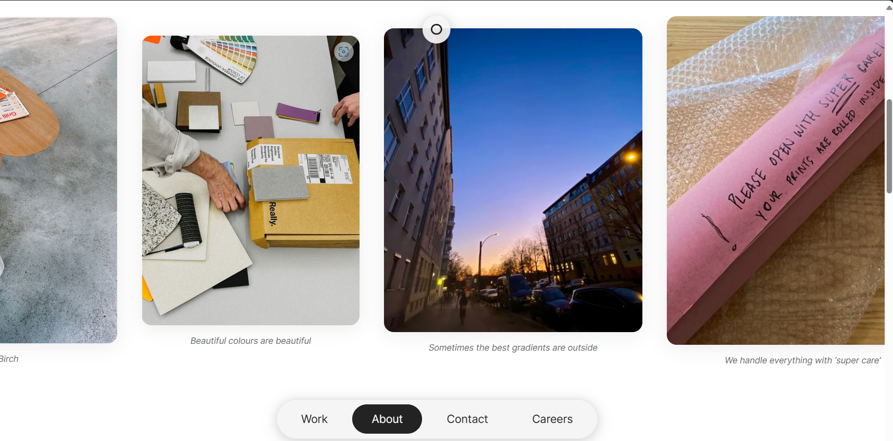
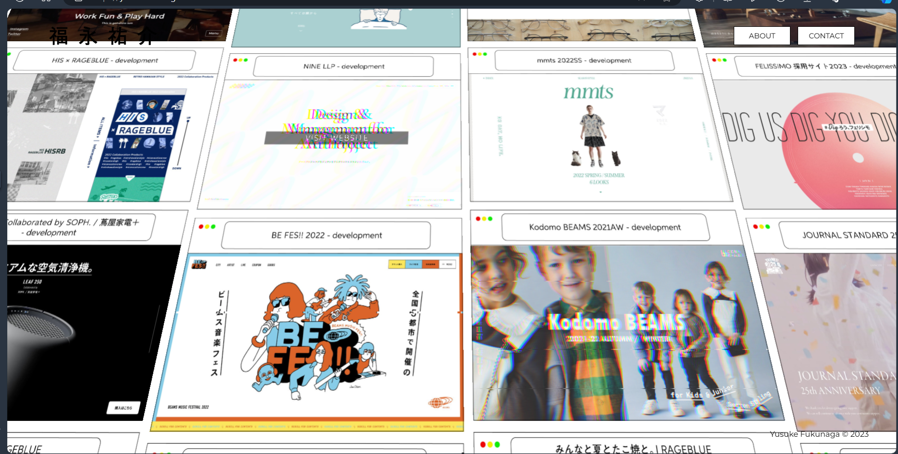
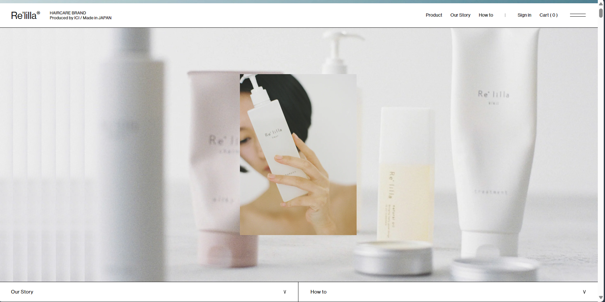
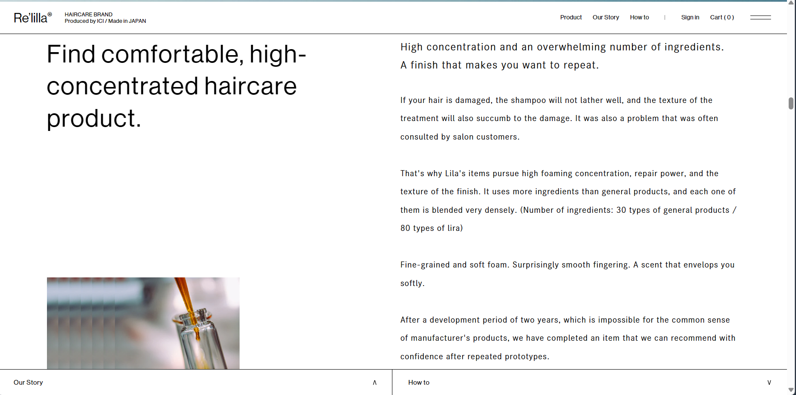
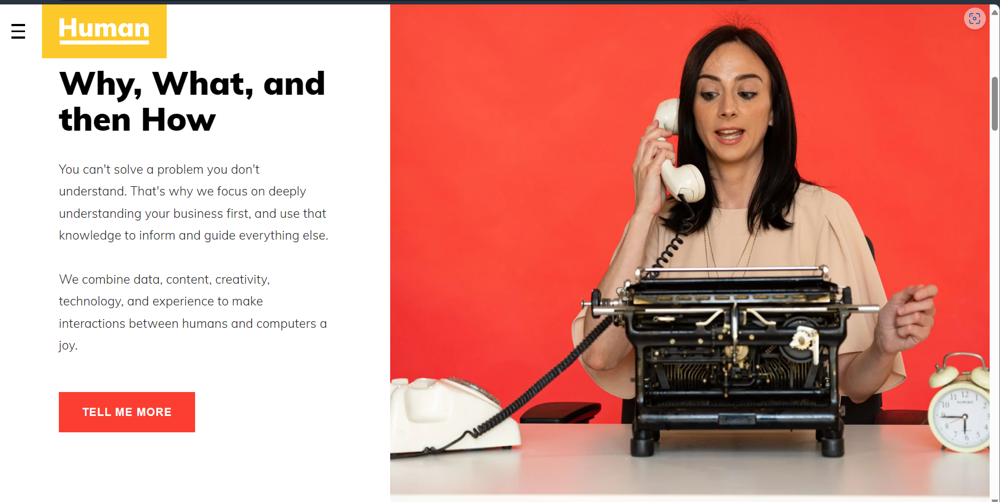
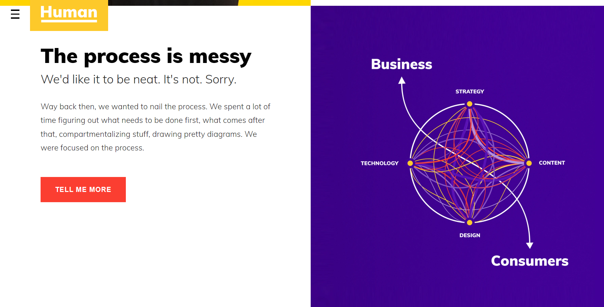
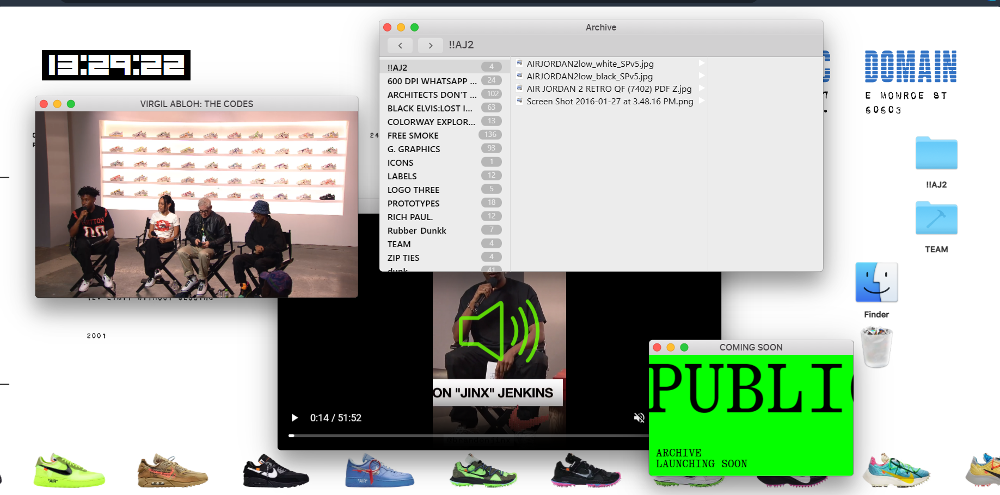
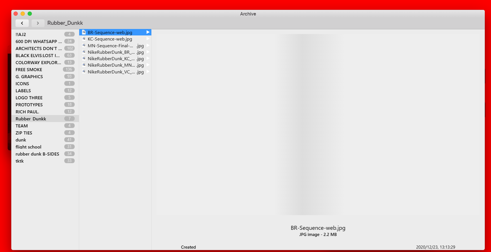

| Discuss your folder structure and URL scheme. Outline your decision-making. | |
| For my folder structure and URL scheme, I decided to follow the general convention because it is my first website that I am making and so I am adopting a simpler and easier outlook for not only the users but for my sake of understanding as well. After all, this assignment is about HTML fundamentals, so I think it makes the most sense to stick to the fundamentals for now and understand the fundamentals before I decide to go out of the convention. Thus, the general convention for a website’s folder structure, is as follows: Domain -> Section -> Sub section -> Page -> Subpage. My URL scheme is as follows: | |
| Put in images of your first wireframe ideas and explain what you are thinking of doing. | |
| images | |
| Put in links to websites that are inspirational, and start collecting reference material here. | |
| https://mad.ac/careers : As the name suggests, MAD website is “MAD” in the sense that the website is very unconventional and innovative. The website primarily promotes user interactivity by allowing the user to move objects and panels around on the homepage (such as the Logo, the About, the social media handles etc). The user finds themselves intrigued and thus stays exploring the website for a long time. The website is quite informal and casual. This can be seen primarily in the design, the theme, and the layout of the website. The website has laid out its panels in the form of the common apps one would find on an iPhone – the notes app, the maps app, and the reminders app. For example, on the homepage, instead of briefly describing the website in a traditional layout (with just a textbox), the “why” and “what” they do, is described in the notes app, with each section being a “note”. The “reminders app” has been used to list out the company’s principles, and allows the user to add their own bullet points, while also allowing the user to cross out the bullet points already laid out (like one would cross out a reminder on the app). One particularly unconventional thing, is that the “About, Contact, etc” headers are placed at the bottom of the website instead of at the top. In addition, the text across the website, is relatively large and uses Arial font. The text therefore is very readable and legible – this also makes the website accessible to various kinds of users. The colours are either grayscale or pastel, thus it is not overwhelming (harsh bright colours are captivating but intense and overwhelming), but friendly and inviting. The last thing that stands out to me, is the layout and display of images on the website. The images are either scrollable, or moveable (depending on the page). On the about page, the images are horizontally scrollable, with simple but striking captions underneath and soft round borders (making it user friendly). On the “Careers” page, the images still have soft round borders, but they are moveable (as on the homepage). I would like to mostly draw from this website’s idea of moving objects around on the website as means to engage the user – particularly the images. |
  |
|
https://yusukefukunaga.com/ : This website is actually only a portfolio for a Japanese developer – Yusuke Fukunaga. He implements an “infinite parallel scroll” to display all his works. The website (aside from the parallel scroll) is simple. He uses only black and white colours. This focuses the user’s attention to his portfolio page which is what is most important. I would like to experiment with a scrolling effect similar to this kind on my website too. It makes for great interactivity with the user as the user finds themself intrigued by the parallel “trippy” effect, and the infinite scroll keeps the user engaged – however to some extent this infinite scroll is used in dark patterns (for example the infinite scrolling on TikTok, YouTube shorts, Instagram reels etc.) and so the ethical nature of it is questionable in some cases. |
 |
|
https://relilla.com/ : This website interestingly enough was developed by Yusuke Fukunaga. I’m most interested in the minimalist tendencies of this website. It is not purely minimalist, however, the website makes use of negative (white) spaces, small sized font, short text, and occasionally large images. The website is an online store for self-care products; thus the stylistic choices are for the purposes of promoting “clean” products. The website appears very pristine and neat. The colours are soft and muted – black, white, grey, beige, pale dark blues and greens – making it a very relaxing website to engage with. I would like to also implement this “elegant but soft” look on my website. |
  |
| https://www.humaninteraction.com/ : From this website I am most interested in the layout of the text. There is a vertical split between the text and the images/other media in most parts of the website. This makes it that the user reads the website in a horizontal manner, like a book. Starting from the left to the right is how people read (in the west), and so there is a natural inclination to approach reading websites in that manner too. I would like to incorporate this in my website. |
  |
| https://public---domain.com/ : Like the MAD website, this website also makes use of moving objects and panels around. The interface is designed like an Apple computer screen (MacBook). |
  |